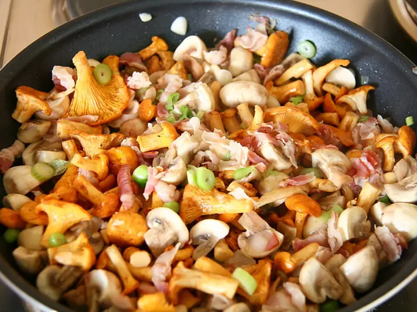

Фото: Katrin Gilger, CC BY-SA 2.0
.jpg){kind=link}
Ризотто с грибами
Кремовый рис с шампиньонами, сливочным маслом и пармезаном
40 мин3 порц.589 ккал на порциюБ 17 · Ж 27 · У 71Итальянская кухня
Продукты на 3 порц.
- Рис1,25 стак.
- Шампиньоны300 г
- Лук репчатый1 шт
- Чеснок1 зуб.
- Бульонный кубик1 шт
- Вода1000 мл
- Оливковое масло2 ст. л.
- Сливочное масло40 г
- Пармезан50 г
- Сольпо вкусу
- Перец чёрный молотый1 щеп.
- Петрушка по желанию10 г
Как готовить
- Растворите бульонный кубик в кипятке и держите бульон горячим на слабом огне.
- Грибы нарежьте пластинками и обжарьте на половине оливкового масла 7 минут до румяности. Отложите.
- В той же сковороде на оставшемся масле обжарьте мелко нарезанный лук и чеснок 4 минуты до прозрачности.
- Всыпьте сухой рис и жарьте 2 минуты, помешивая, пока зёрна не станут полупрозрачными по краям.
- Вливайте горячий бульон по половнику и помешивайте. Следующий половник добавляйте, когда предыдущий почти впитался. Всего 18-20 минут.
- Рис готов, когда мягкий снаружи и чуть упругий в центре. Верните грибы.
- Снимите с огня, вмешайте сливочное масло и тёртый пармезан, накройте на 2 минуты. Посыпьте петрушкой.
Совет. Нужен круглый рис для ризотто (арборио) или любой круглый. Пропаренный длинный рис не даст кремовости.